Если вы фанат комиксов, манги или графических романов и хотите читать любимые выпуски или новые издания не только в бумажном виде, то этот материал однозначно для вас. В подборке собраны самые популярные мобильные приложения, а также настольные программы для чтения комиксов. А некоторые из представленных сервисов даже работают на нескольких платформах.
YACReader
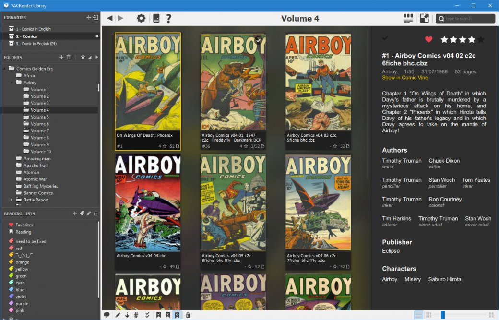Программа YACReader имеет стильный, но минималистичный дизайн, а помимо воспроизведения любого формата комиксов, получила удобную библиотеку для хранения электронной коллекции пользователя и загрузки архивов. YACReader представлен на Windows, MacOS, Linux и iOS.
Honeyview
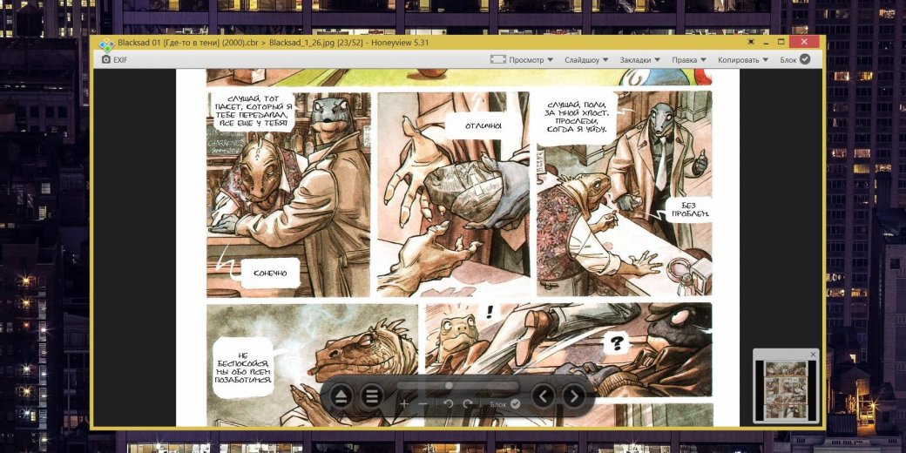Приложение Honeyview создано не только для чтения комиксов, но и для работы с другими типами файлов (фотографии, сканы, архивы). У программы простейший и местами некрасивый дизайн, зато она умеет запускать популярные форматы для комиксов (CBR и CBZ), удобно синхронизировать библиотеку файлов, делать заметки и оставлять закладки. Honeyview работает только на Windows.
MComix
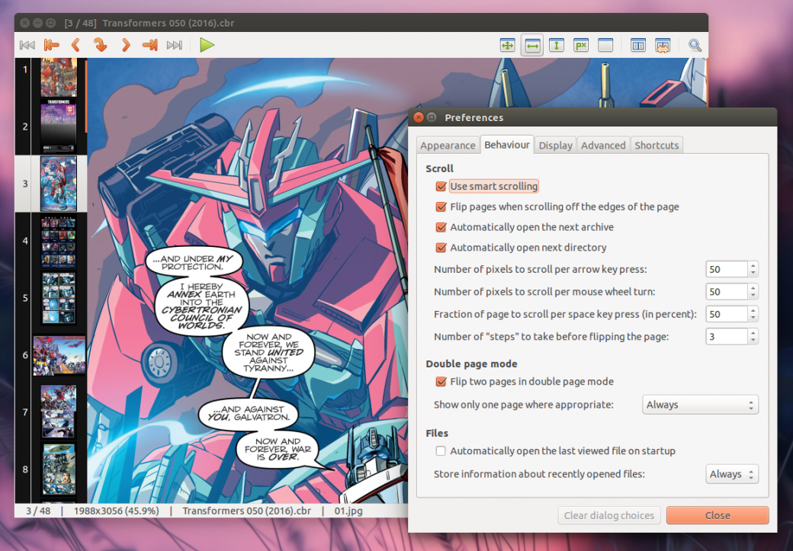MComix — простейший настольный ридер комиксов с открытым исходным кодом, незатейливым интерфейсом и элементарными настройками. Тут даже есть специальный режим чтения манги. Программа доступна для Windows и Linux, а после скачивания не требует установки на компьютер.
ComicRack
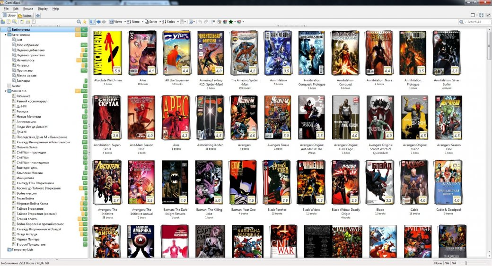Стильное приложение ComicRack умеет запускать сразу несколько комиксов. Тут есть своя удобная библиотека с расширенными настройками хранения и «умные» списки сортировки. Программу можно перевести в минималистичный режим (клавиша F в десктопной версии), чтобы во время чтения ничего не отвлекало от происходящего на экране. ComicRack доступна на Windows, Android и iOS.
Comics (Comixology)
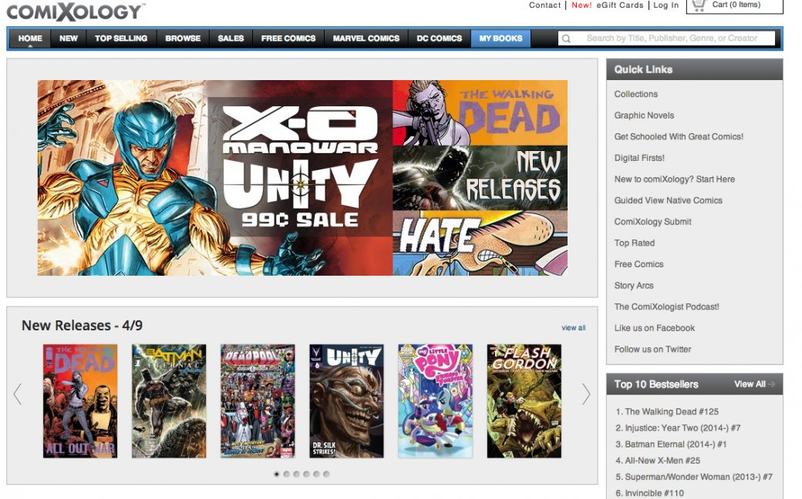Comics (Comixology) — читалка для комиксов и популярный сервис со своей огромной базой изданий от Marvel, DC, Image Comics, IDW, Disney и других. Приложение имеет удобный поиск и сортировку комиксов, современный дизайн и практичную функцию покадрового чтения комиксов. В Comics (Comixology) есть внушительная база бесплатных изданий, но за новые или суперпопулярные серии придется платить. Есть версии для iOS, Android и для читалок Kindle.
Simple Comic
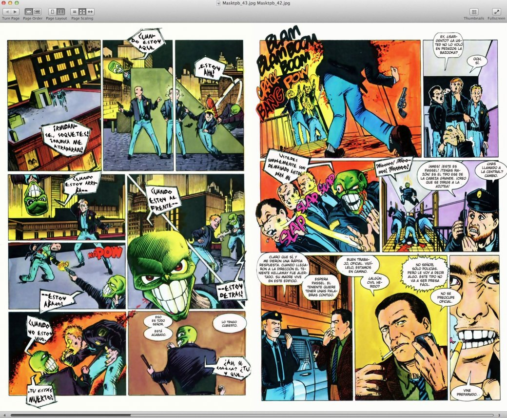Перед вами удобный, симпатичный и простой в применений ридер комиксов для macOS. Программа поддерживает все популярные форматы комиксов и оснащена режимом чтения манги (листание справа налево), а также функцией предпросмотра файлов (для удобного перехода на любую страницу). При желании можно включить полноэкранный режим и скрыть без того упрощенное меню.
MangaMeeya

Приложение MangaMeeya не блещет новеньким дизайном и широкими возможностями, но это все еще очень популярная читалка для любителей манги, которая позволяет просматривать их справа налево. Помимо большого перечня файлов, программа умеет открывать папки и архивы (есть поддержка просмотра изображений). MangaMeeya работает только на Windows.
Astonishing Comic Reader
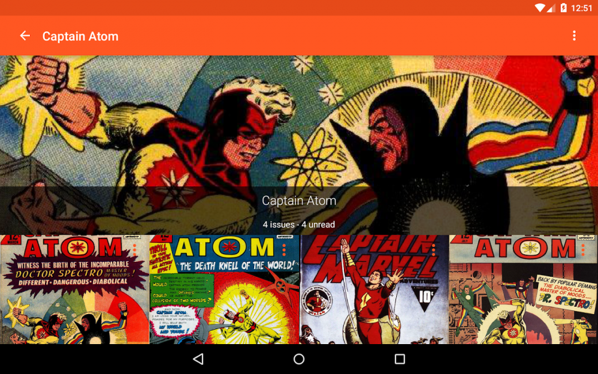Единственная программа из списка, которая работает как расширение для браузера Google Chrome (есть и версия для Android). Если вы хотите читать комиксы прямо в браузере и не заморачиваться с установкой программ на ПК, то Astonishing Comic Reader — лучший вариант. Приложение получило адекватный, хоть и не самый передовой, внешний вид, умеет загружать комиксы с Google Drive и поможет содержать библиотеку файлов.
Challenger Comics Viewer
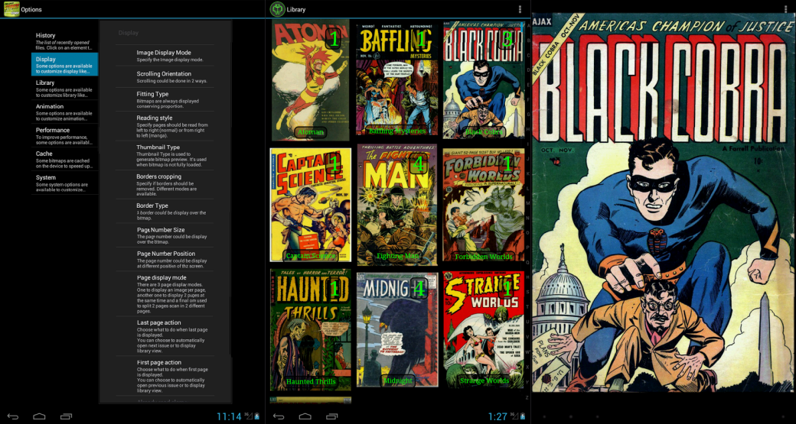Challenger Comics Viewer — удобный и современный ридер для комиксов и манги на Android. Пользователям доступны вертикальная и горизонтальная прокрутки, несколько режимов отображения файлов и настраиваемый внешний вид благодаря сменным темам. Программа также умеет загружать файлы из облака (Google Drive, OneDrive, DropBox).
Perfect Viewer
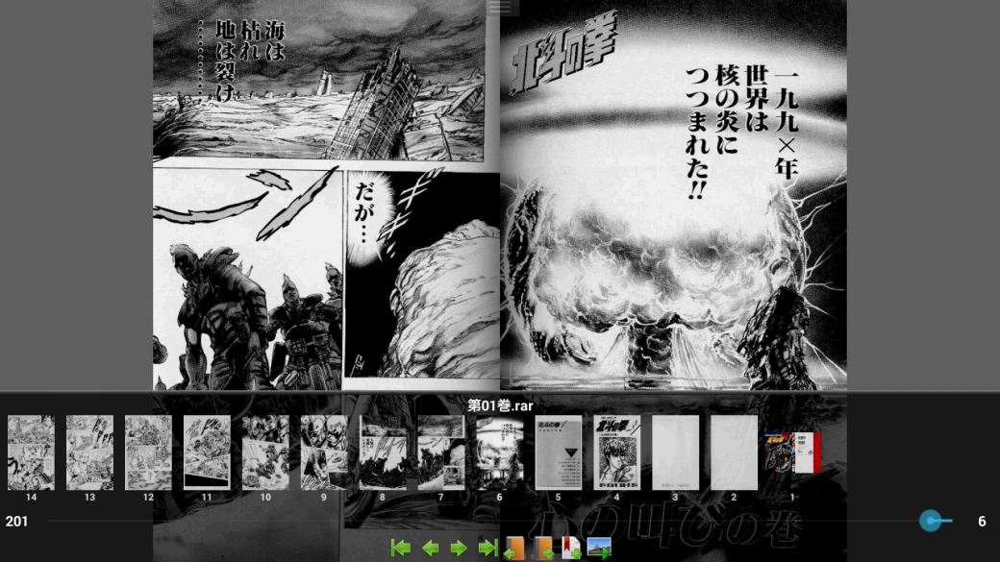Очень популярное и очень древнее приложение для чтения комиксов (только на Android) поддерживает все популярные форматы изданий (плюс PDF через плагин), имеет три варианта просмотра файлов (новелла, изображение, комикс), удобную навигацию, систему отметок прочитанных выпусков, быстрый доступ в меню и несколько фильтров сглаживания для улучшения качества картинки комикса.
Marvel AR
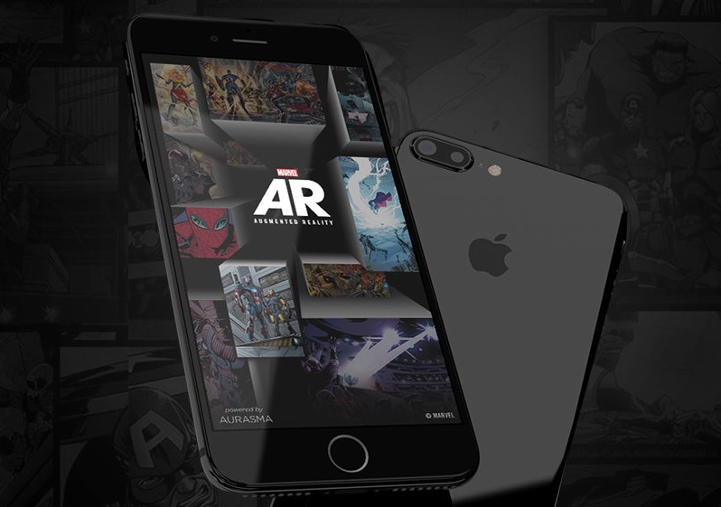Marvel AR представляет собой не обычный ридер комиксов, а особую программу с функциями дополненной реальности. Приложение сканирует специальные метки, которые имеются в бумажных или цифровых комиксах. Они отсылают пользователя к дополнительным материалам о конкретном выпуске, серии или любимых героях (видеороликам, фотографиям, 3D-анимации и другому). Marvel AR представлена на Android и iOS.
CDisplay
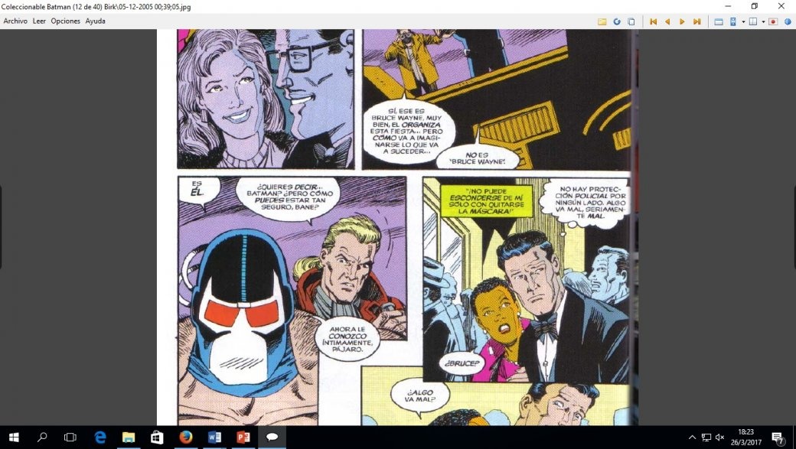Самая популярная программа CDisplay получила минималистичный интерфейс, умеет открывать фотографии в архивах, улучшать качество картинки комикса и подстраивать страницы издания под размер дисплея. CDisplay работает только на Windows.
Dark Horse Comics
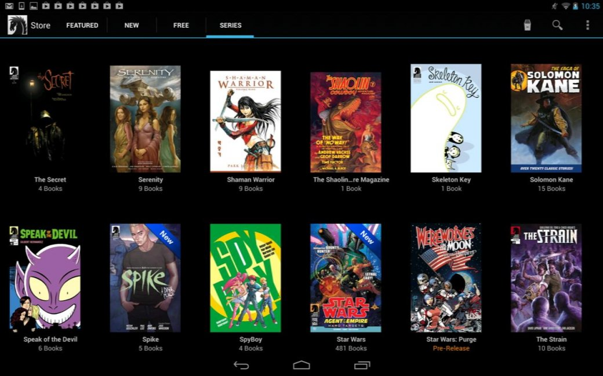Приложение-сервис Dark Horse Comics имеет огромную библиотеку комиксов одноименного издательства. Среди них есть много бесплатных, но за большую часть новинок и адекватных серий придется платить. Программа поддерживает несколько видов просмотра комиксов, удобную библиотеку любимых изданий и позволяет хранить купленные выпуски в облаке. Приложение Dark Horse Comics работает на Android и iOS.
CDisplayEX
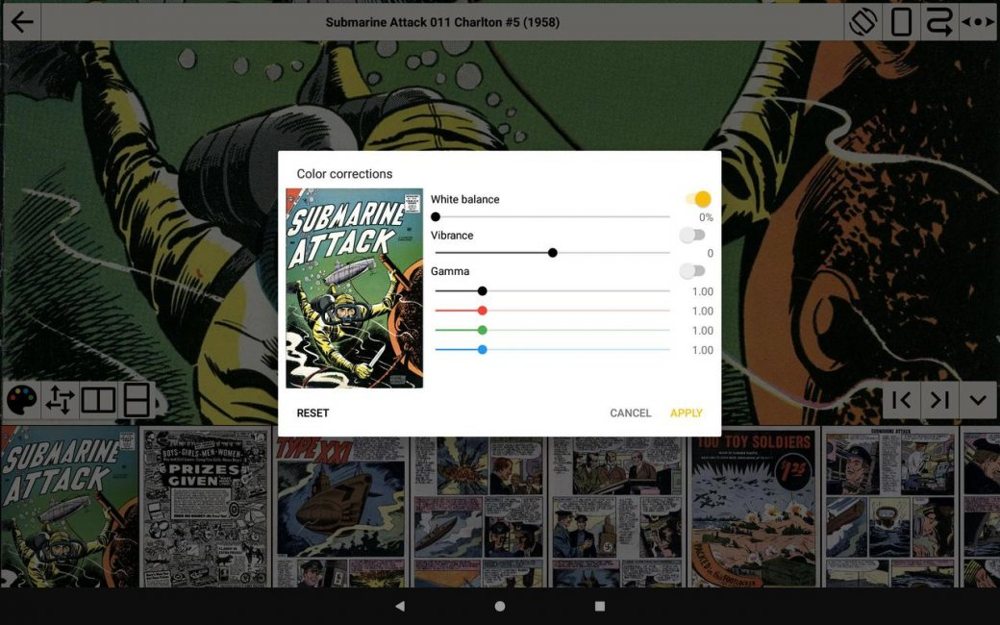Настольная версия программы получила простой и понятный интерфейс CDisplayEX умеет открывать все популярные форматы комиксов (и манги) и в ней удобно работать с большими библиотеками файлов. Через приложение для Android также можно читать PDF-файлы и книги.
ComicScreen (ComicViewer)
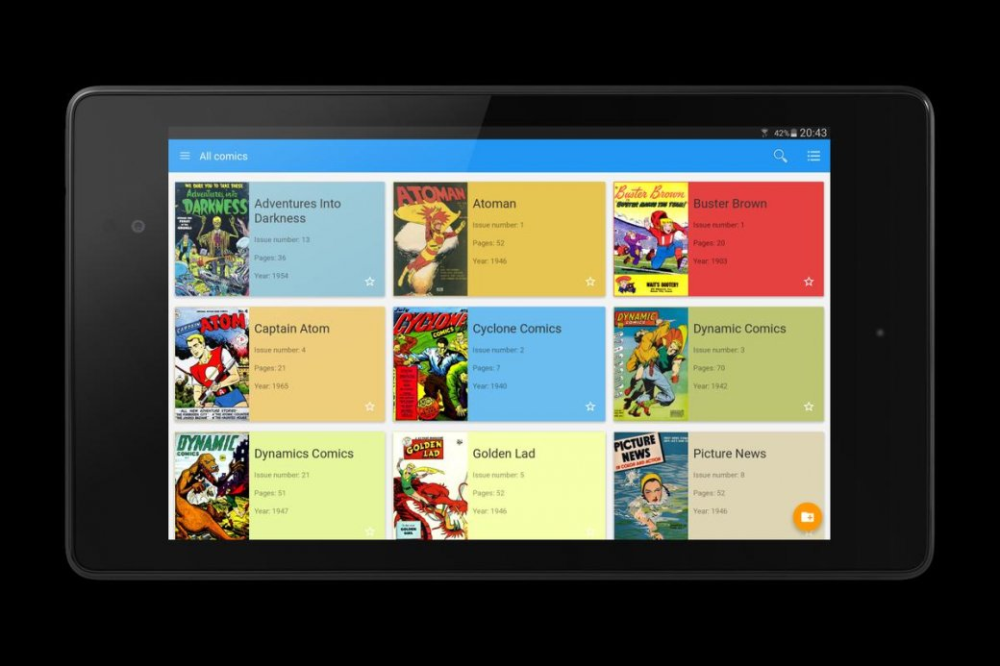Приложение ComicScreen снабдили современным Material-дизайном. Программа умеет запускать изображения в архивах, поддерживает большинство популярных форматов комиксов и открывает их в нескольких режимах просмотра. Сервис доступен только на Android.